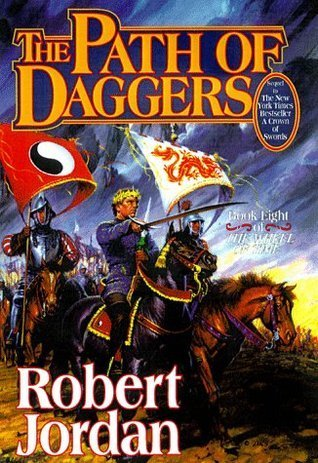

"The Path of Daggers"
- Read on 2015-08-25
- Rating: ️️️️️
- Format: 🎧 (23 hours 25 minutes)
Yawn. One of the major plot points of this book (which has been lead up to for a few books) I never could get myself to care about. I don't know if this is a fault of the writing, or that I'm just not astute enough to know why I should care. That being said, there were several parts of this book I never cared about, including the climax of the book. It just didn't matter to me.
That being said, I _love_ the sisters in the White Tower going on their hunt for the Black Ajah. Their methods are surprising, and questionable, and yet I completely I agree with them. It's the one storyline in here I enjoyed. The Bowl of the Winds? Big whoop. Elaida? A complete idiot, who I find it hard to believe could actually have risen to her position. I suppose I admired Egwene's maneuvering of the Rebels - it was well done, and she seems to have them fully in her control - something that is nice to see, since I think we're all pulling for her.
Still, I was bored, and glad this was a relatively short book. Let's just get it out of the way so I can be that much closer to the _really_ good stuff.
- Prior: A Crown of Swords
- Next: Winter's Heart